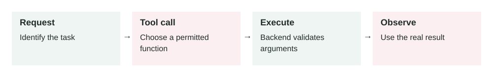

Tool Use in AI Agents
In this lesson
- 1. What It Means
- 2. Why It Matters in Production Systems
- 3. How It Works Step by Step
- 4. How To Apply It In A Project
- 5. Real-World Example 1: Customer Support Agent
- 6. Real-World Example 2: Internal Sales Assistant
- 7. Common Mistakes, Risks, And Trade-Offs
- 8. Practical Best Practices
- 9. Small Practice Exercise
2026-06-26 · Archived lesson · Original lesson text; technical claims not rechecked

Figure 2. Original study diagram added on 7 October 2026 to summarize this archived lesson. Each stage follows the previous stage; review may send the task back for correction.
1. What It Means
Tool use means an AI model can call an external function, API, database, search system, calculator, file reader, or business system instead of only answering from its own text knowledge.
A normal chatbot only produces text.
A tool-using agent can do things like:
- Search your company documents
- Check an order status
- Create a support ticket
- Read a calendar
- Run code
- Query a database
- Send an email after approval
- Calculate exact numbers
The important idea is simple:
The AI decides what tool is needed, sends structured input to that tool, receives the result, then uses that result to continue the task.
A tool usually has three parts:
- Name: what the tool is called, for example
get_order_status - Input schema: what information the tool needs, for example
{ "order_id": "12345" } - Output: what the tool returns, for example
{ "status": "shipped", "delivery_date": "2026-06-28" }
The model should not guess when a tool can provide the real answer.
2. Why It Matters in Production Systems
Tool use is one of the main differences between a demo chatbot and a useful production agent.
Without tools, the AI can only generate possible answers. That is risky for real systems.
For example:
- It may guess a customer’s refund status.
- It may invent a database result.
- It may give outdated pricing.
- It may say an action was completed when nothing happened.
With tools, the agent can connect to real systems.
This matters because production systems need:
- Accuracy: use live data instead of guesses
- Action: actually perform tasks, not just explain them
- Security: restrict what the AI can access or change
- Auditability: log every tool call and result
- Reliability: retry failed operations or ask for missing information
- Control: require approval before dangerous actions
Tool use makes AI more useful, but also more dangerous if designed badly. A tool-using agent can affect real users, real money, and real data.
3. How It Works Step by Step
A typical tool-use flow looks like this:
User asks for something
Example:
“Where is my order #A1928?”
Model understands the task
The model sees that this question requires live order data. It should not answer from memory.
Model selects a tool
It chooses something like:
{ "tool": "get_order_status", "input": { "order_id": "A1928" } }System runs the tool
The real backend calls the order database or shipping API.
Tool returns data
Example:
{ "order_id": "A1928", "status": "in_transit", "carrier": "DHL", "estimated_delivery": "2026-06-29" }Model writes the answer
The model converts the tool result into simple language:
“Your order A1928 is in transit with DHL. Estimated delivery is June 29, 2026.”
System logs the action
In production, you should log:
- User request
- Tool selected
- Tool input
- Tool output
- Final answer
- Errors or retries
This log helps with debugging, security reviews, and quality improvement.
4. How To Apply It In A Project
Start small. Do not give the agent too many tools at once.
A practical implementation plan:
Pick one clear workflow
Example:
- “Check order status”
- “Create support ticket”
- “Find internal policy”
- “Summarize customer account”
Design one tool with a strict schema
Example:
{ "name": "get_order_status", "description": "Fetch the current shipping status for one customer order.", "input": { "order_id": "string" } }Make the tool do one thing well
Avoid a giant tool like
manage_customer. That is too broad.Prefer smaller tools:
get_customer_profileget_order_statuscreate_refund_requestcreate_support_ticket
Add permission checks outside the model
Never trust the model alone for security.
The backend should check:
- Is this user allowed to access this order?
- Is this action allowed?
- Does this action need human approval?
Add safe failure behavior
If the tool fails, the model should say:
“I could not check the order right now. Please try again later.”
It should not invent the answer.
Test with real scenarios
Test normal, missing, invalid, and risky inputs.
Example test cases:
- Valid order ID
- Order ID from another user
- Missing order ID
- Fake order ID
- Tool timeout
- User asks for a refund instead of status
5. Real-World Example 1: Customer Support Agent
Use case: An ecommerce company wants an AI assistant to answer order questions.
User input:
“Has my order 88421 shipped?”
Agent behavior:
The agent should call:
{
"tool": "get_order_status",
"input": {
"order_id": "88421"
}
}
Tool result:
{
"status": "shipped",
"carrier": "FedEx",
"tracking_number": "FX29301",
"estimated_delivery": "2026-06-27"
}
Final answer:
“Yes. Your order 88421 has shipped with FedEx. The estimated delivery date is June 27, 2026.”
Good outcome:
The answer is based on live order data.
Bad design risk:
If the agent only guesses, it may say the order shipped when it did not. That creates customer frustration and support cost.
Production detail:
The backend must verify that the logged-in customer owns order 88421. The model should not decide that by itself.
6. Real-World Example 2: Internal Sales Assistant
Use case: A sales team wants an AI assistant that prepares account summaries before calls.
User input:
“Prepare a quick summary for Acme Corp before my meeting.”
The agent may need multiple tools:
{
"tool": "get_crm_account",
"input": {
"company_name": "Acme Corp"
}
}
Then:
{
"tool": "get_recent_support_tickets",
"input": {
"account_id": "acct_781"
}
}
Then:
{
"tool": "get_open_opportunities",
"input": {
"account_id": "acct_781"
}
}
Tool results may show:
- Acme is a current customer.
- They have 3 open support tickets.
- One renewal opportunity is worth
$80,000. - Last meeting note says they are concerned about onboarding speed.
Final answer:
“Acme Corp is an active customer with an $80,000 renewal opportunity. They currently have 3 open support tickets, mostly about onboarding speed. In the meeting, focus on support resolution, renewal risk, and next onboarding milestones.”
Good outcome:
The salesperson gets a useful, current briefing.
Bad design risk:
The agent may expose sensitive CRM data to the wrong employee if permission checks are weak.
Production detail:
Each tool should respect the user’s role. A junior salesperson may not be allowed to see enterprise pricing or legal notes.
7. Common Mistakes, Risks, And Trade-Offs
Mistake 1: Too many tools
If the agent has 40 tools, it may choose the wrong one.
Better: start with a small set of high-value tools.
Mistake 2: Tool descriptions are unclear
Bad description:
“Gets data.”
Good description:
“Fetches the shipping status for one order owned by the current user.”
Clear descriptions help the model choose correctly.
Mistake 3: No permission checks
The model should not be your security layer.
Always enforce permissions in backend code.
Mistake 4: Letting the agent perform dangerous actions too easily
Actions like refunds, deleting data, sending emails, or changing billing plans should often require confirmation.
Example:
“I can create a refund request for $120. Do you want me to continue?”
Mistake 5: Trusting tool output blindly
Tools can fail, return old data, or return partial data.
The system should handle:
- Empty results
- Timeouts
- Permission errors
- Invalid input
- Conflicting data
Trade-off: More power means more risk
Tool use makes agents much more useful, but each tool increases the attack surface.
An attack surface means the number of ways something can be misused or attacked.
For example, if an agent can send emails, a malicious user may try to trick it into sending private information.
8. Practical Best Practices
Use these rules when building tool-using agents:
Make tools narrow
One tool should do one clear job.
Use strict input schemas
Do not accept messy free text when structured fields are possible.
Validate inputs in backend code
Check types, IDs, ownership, and permissions.
Separate read tools and write tools
Reading data is usually lower risk.
Writing data, sending messages, deleting records, or charging money is higher risk.
Require approval for high-risk actions
Example high-risk actions:
- Send email
- Issue refund
- Delete record
- Change subscription
- Share private data
Log every tool call
Logs help answer:
- What happened?
- Why did the agent do that?
- What data did it use?
- Did the tool fail?
Give the model error-handling instructions
Example:
“If the tool returns no result, say you could not find the order. Do not invent an order status.”
Test tool selection
Do not only test the final answer.
Test whether the agent picked the correct tool with the correct input.
9. Small Practice Exercise
Imagine you are building an AI assistant for a clinic.
A patient asks:
“Can you move my appointment with Dr. Ahmed from Monday to Wednesday?”
Question:
What tools would you create?
Think about:
- What read tool is needed first?
- What write tool is needed later?
- What permission check is required?
- Should the agent ask for confirmation before changing the appointment?
A strong answer might include tools like:
get_patient_appointmentscheck_doctor_availabilityreschedule_appointment
And it should require confirmation before the final change.